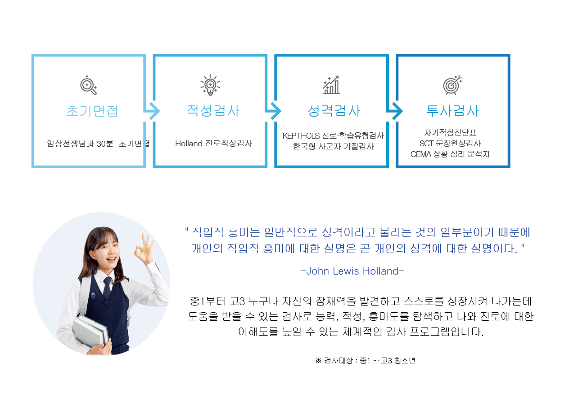
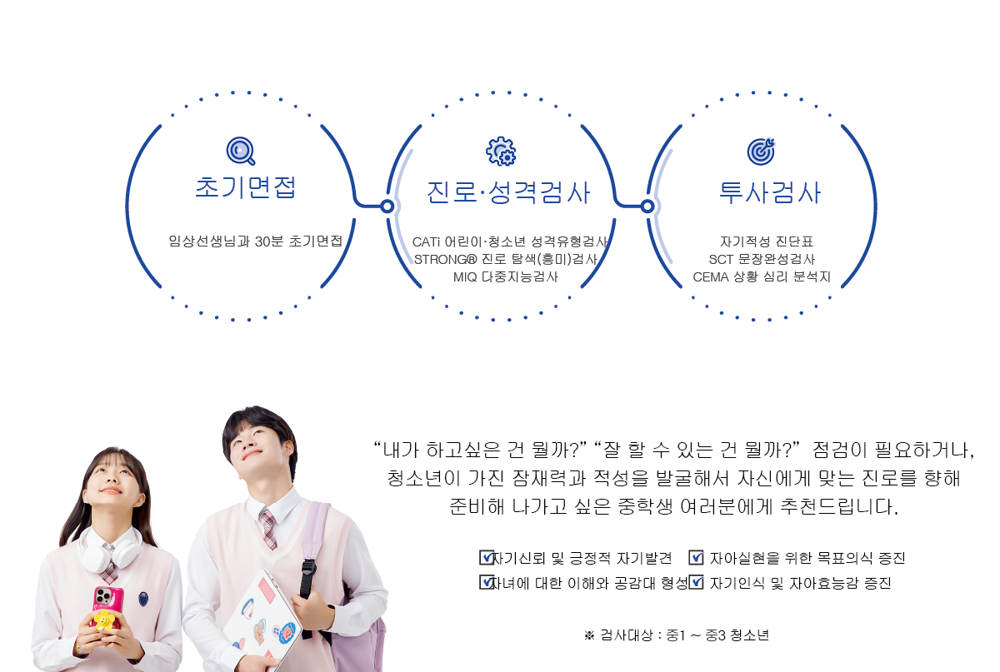
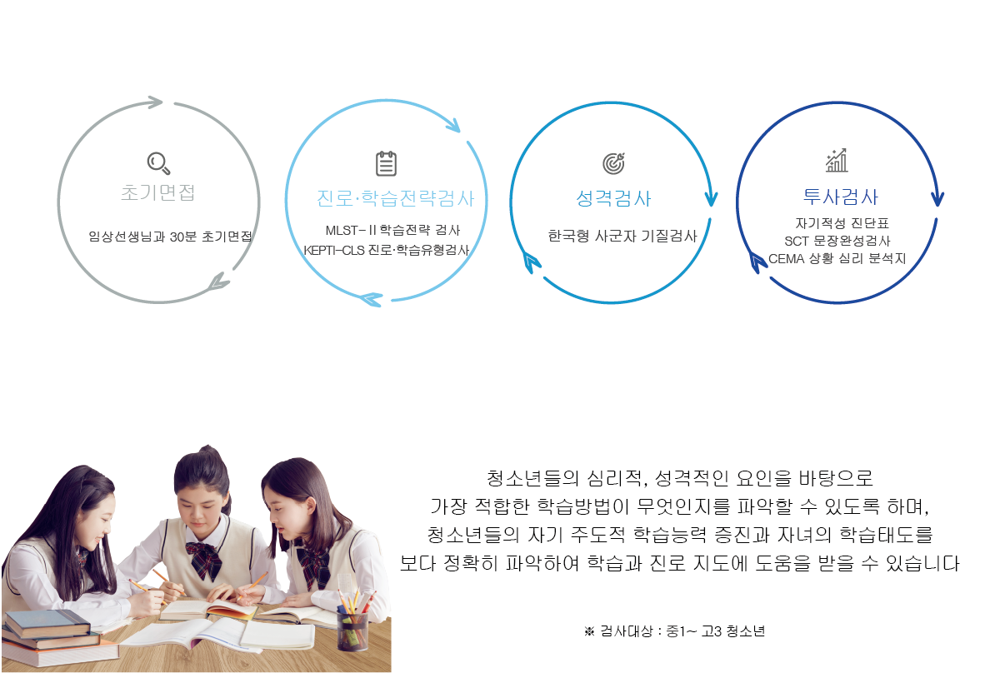

추천검사 프로그램
분야별 전문가들이 구성한 모두만의 특별 검사프로그램
추천검사 프로그램
분야별 전문가들이 구성한 모두만의 특별 검사프로그램
청소년 종합진로적성검사

우리아이 미래를 위해 필요한 종합진로적성검사
검사구성
검사구성
검사구성

 심리검사 신청 절차
심리검사 신청 절차

 010 -
7577 - 7314
010 -
7577 - 7314


상담시간
소요 시간 : 30분 ~ 1시간 내외
해석 상담 : 50분 (검사 후 일주일 뒤 해석상담)

검사효과
자기탐색의 과정을 통해
나와 타인을 이해하고 긍정적 자아개념을
확립하는데 도움을 받으실 수 있습니다.
 평일 : 오전 10시 ~오후 9시
평일 : 오전 10시 ~오후 9시
토 : 오전 10시 ~오후 8시
일 : 사전 예약시 가능
상담문의
상황에 맞는 검사를 추천해드리고
비용안내 및 문의사항을 답변드립니다
상담예약
원하시는 상담 날짜와 시간을
예약하실 수 있습니다